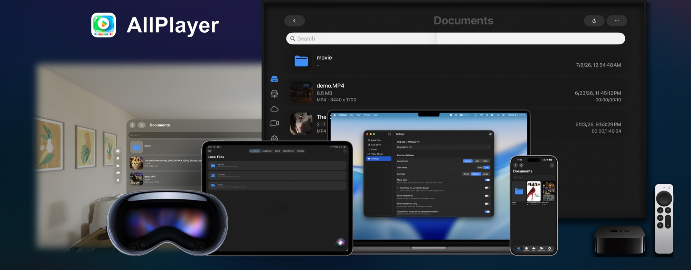

On device
Files, Photos, and disc images
Native across Apple platforms
Bring local files, LAN and NAS libraries, media servers, cloud drives, and online streams into one personal media hub built for iPhone, iPad, Mac, Apple TV, Apple Vision Pro, and Apple Watch.
Local playback stays available after the trial. Pro is an optional one-time purchase.

Files, Photos, and disc images
NAS and media servers
Cloud drives and NAS services
HLS, m3u8, and shared links
Everything in reach
Browse media across your devices, folders, servers, cloud accounts, and stream lists in one place.
Move naturally between local files, LAN servers, cloud storage, and video streams without rebuilding your library around one service.
Play common video formats such as MP4, MOV, MKV, AVI, FLV, WMV, TS, M4V, RMVB, and RM. Browse Photos and open supported ISO, Blu-ray, and DVD Video content.
Browse folders and play directly from shared storage or a home media server.
Connect the services you already use, browse remote folders, and start playback without manually moving every file first.
Add HLS, m3u8, live, and web video links. Search and sort lists, import or export configurations, select available quality, cache an authorized stream locally, or watch up to four streams in five adjustable layouts.
Step into cinema environments, resize and curve the screen, adjust distance and height, switch 2D or stereo layouts, and keep subtitles and playback controls within reach.
Your media center
Choose Media Center to find your saved media and continue watching, or File Browser to browse folders directly.
Continue Watching, Recently Added, Favorites, Watch Later, History, and Downloads bring local, Photos, NAS, cloud, and stream content together.
Keep the familiar Local, LAN, Cloud, and Streams navigation when you want to move straight through folders. Switch modes at any time in Settings.
Connect from more places
Connection tools are now part of the product experience, not a collection of settings you have to troubleshoot alone.
Connect to your Tailscale network to access compatible home media services while away, without running a separate Tailscale app on the playback device.
Discover sources, follow guided setup, and test both the current network and real server download speed when playback needs diagnosis.
Send supported media with AirPlay, or let AllPlayer appear as a DLNA / UPnP target. AirPlay receiving is also available on supported iPhone and Mac configurations.
One Apple ecosystem
iCloud can sync connections and viewing state. Handoff moves compatible playback between devices, Apple TV supports QR-assisted setup, and Apple Watch keeps browsing and playback controls on your wrist.
Keep progress, favorites, playback preferences, and connection configurations available across supported devices.
Use your phone to scan a QR code and securely transfer supported connection or sign-in details to the big screen.
Browse media sources from your paired iPhone on Apple Watch and control playback from your wrist.
Simple access
Download free and start the 7-day Pro trial in the app when you are ready. Pricing is shown by the App Store in your region.
AllPlayer
Built by an independent developer for people who keep, organize, and enjoy their own media.
Feature availability can vary by device, operating system, media source, and network conditions. Some advanced features require AllPlayer Pro.